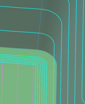
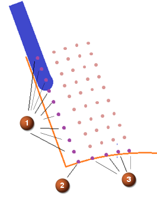
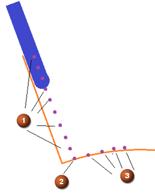
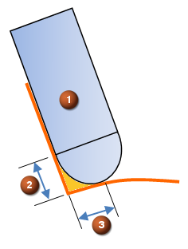

Contour Profile cleanup passes
Use the Only Cut Along Wall and Floor option to generate a finishing operation that works on the wall and on the floor as needed. This option can be used in the following ways:
-
To overlap the wall finish passes and the floor finish passes. The floor finish passes often use the wall stock.
-
As a cleanup operation to remove uncut blank material left by the larger tool in the previous operation.
|
 |
|
|
Overlapped operation |
Cleanup operation |

NX generates the tool passes in the following order:
-
Depth passes that cut from the top of the part down to the dual contact point of the current tool.
-
Side passes that cut away from the wall.
Only Cut Along Wall and Floor
|
1: Multiple depth passes following the floor 2: Dual contact point of the current tool 3: Multiple side passes following the wall |
|
|
 |
 |
|
Only Cut Along Wall and Floor = |
Only Cut Along Wall and Floor = |
Adjusting stock depth to support horizontal corner cleanup
With the appropriate side and depth stocks, you can use the Contour Profile operation to clean up horizontal corners.
|
1: Reference tool from the previous operation 2: Upper contact point of the reference tool 3: Lower contact point of the reference tool |
4: Current tool 5: Depth Stock Offset 6: Side Stock Offset |
|
 |
|
|
Depth stock and side stock determined from previous operation |
Contour Profile clean up passes: 4 depth passes + 4 side passes |

Where do I find it?
|
Application |
Manufacturing |
|
Prerequisite |
Contour Profile operation |
|
Location in dialog box |
Contour Profile operation dialog box→Path Settings group→Cutting Parameters |